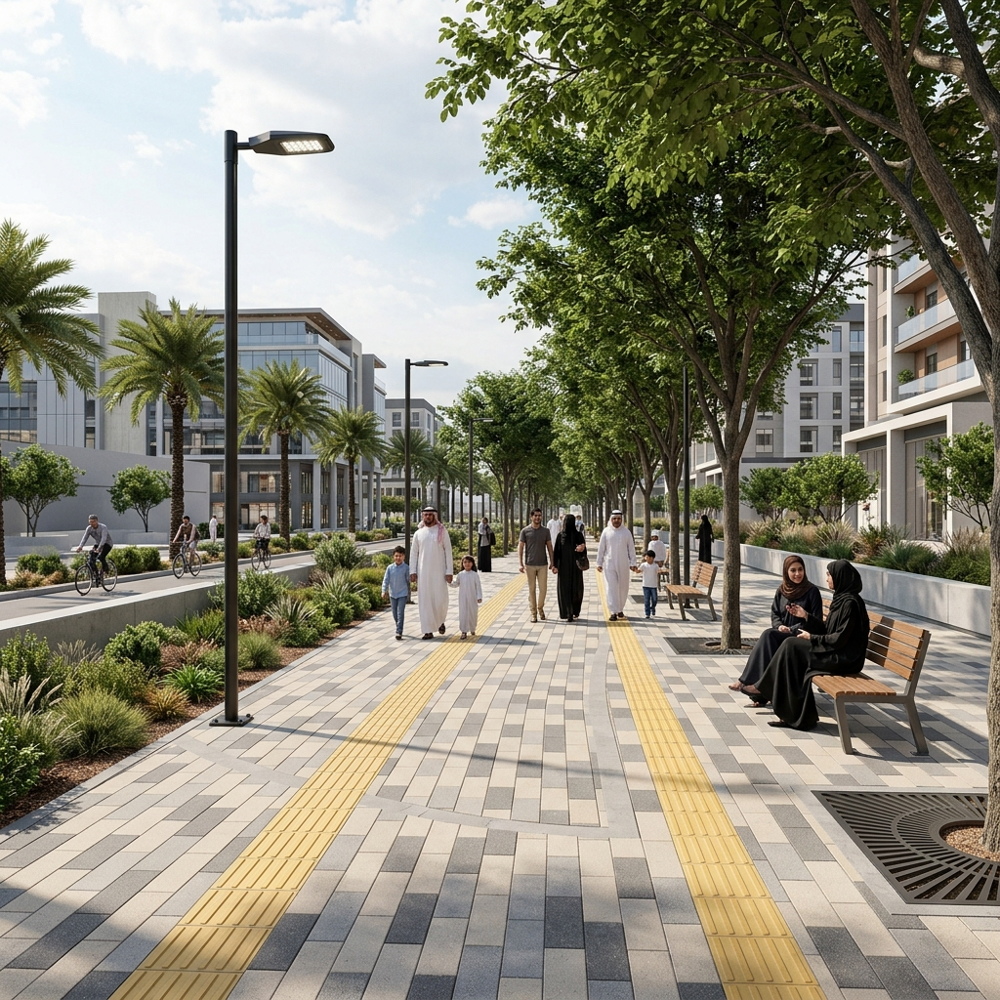

الرقعة الخضراء كمصدر للحياة والراحة والصحة المستدامة
تصنيفات فرعية تضمن سهولة الوصول للغطاء النباتي
حديقة الحي السكنية
تخدم نطاق المشي المباشر للعائلات والأطفال داخل المربع السكني (نصف قطر تغطية 400 متر-600 متر).
- ملاعب أطفال متطورة وآمنة.
- جلسات عائلية مظللة وموزعة.
- مسارات مشي محيطية قصيرة.
- حواجز خضراء لحماية الخصوصية.

حديقة الجيب (Pocket Park)
مساحات خضراء بالغة الصغر تستغل الأراضي غير المبنية وتوفر نقاط تنفس بصري واستراحة للمشاة.
- مناسبة للمناطق ذات الكثافة العمرانية المرتفعة.
- عناصر مقاعد وشبكة ري مصغرة.
- أشجار ظل كبيرة منفردة لتوفير مساحة تغطية مناخية.

المتنزه العام المركزي
مساحات شاسعة على مستوى المدينة تهدف إلى الاستجمام والرياضة وتضم مرافق متنوعة تلبي تطلعات السياح والسكان.
- مسارات جري ودراجات ممتدة ومستقلة.
- بحيرات مائية وملاعب رياضية متنوعة.
- أماكن مخصصة للمطاعم والمقاهي.
- مواقف سيارات خارجية منظمة بشكل دقيق.

الحديقة الطولية (Linear Park)
تمتد بمحاذاة الطرق الرئيسية أو قنوات تصريف السيول أو ممرات المشاة الطويلة لربط أجزاء المدينة وتأمين المشي المظلل.
- مسار مشاة طويل مستمر بقلب الحديقة.
- مناطق استراحة متتالية على مسافات منتظمة.
- دور تشجير وقائي ومصدات للغبار وعادم السيارات.
خمسة مبادئ تدعم نجاح الفراغ الأخضر واستدامته
العناصر المادية التي تشكل فراغ الحديقة
معايير هندسية ملزمة لضمان الجودة والاستدامة
اختيار النباتات المحلية والملائمة للتربة
تشترط الإرشادات زراعة ما لا يقل عن 70% من نباتات وأشجار الحديقة من الأنواع المحلية المتكيفة مع مناخ المنطقة الشرقية الجاف والملوحة (مثل السمر، السدر، الغاف الخليجي، والياسمين البري)، مع الحد من النباتات الدخيلة المستهلكة للمياه.
كفاءة الري واستخدام المياه الرمادية
يجب تصميم شبكات ري آلية تعمل بالتنقيط أو الرشاشات الموجهة تحت السطح لتقليل التبخر، مع الاعتماد التام على المياه المعالجة أو مياه الصرف الرمادي المفلترة، وتجنب الري في ساعات النهار الحارة (تحديد ساعات الري ليلاً أو فجراً).
حماية ألعاب الأطفال ومواد امتصاص الصدمات
يجب تزويد كافة مناطق اللعب بأرضيات مطاطية معتمدة (EPDM/SBR) بسماكة تتناسب مع ارتفاع السقوط للألعاب، مع توفير مظلات قماشية معالجة ضد الأشعة فوق البنفسجية لتغطية كامل منطقة اللعب بنسبة تظليل 100%.
الإنارة الموجهة والأمان ليلاً
استخدام أعمدة إنارة بارتفاع منخفض (3.5 متر - 4.5 متر) موجهة للأسفل لمسارات المشي، مع الحفاظ على شدة إضاءة لا تقل عن 15 لوكس في المعابر والمناطق المخصصة للأطفال لتأمين الرؤية العامة دون وهج يضر بالنمو الطبيعي للأشجار.
مسارات المشي ومرونة الأرضيات
يُفضل رصف مسارات المشاة الرياضية بمواد مرنة ذات مرونة نسبية مثل الإسفلت المطاطي أو الرمل المدكوك المعالج، وتجنب استخدام البلاط الصلب اللامع أو المواد العاكسة للضوء والحرارة.
الربط وسهولة الوصول مع الأحياء المجاورة
يجب ألا تُحاط حديقة الحي السكنية بأسوار مادية مغلقة. يجب أن تكون مفتوحة من جميع الجهات مع توفير معابر مشاة آمنة ومرفوعة تربط الأرصفة المحيطة مباشرة بمداخل الحديقة دون فروق في المناسيب.
تأمين مرافق الخدمات وتوزيع دورات المياه
توزيع مرافق دورات المياه بشكل متوازن بحيث لا تزيد المسافة بين أي نقطة في الحديقة وأقرب دورة مياه عن 150 متراً، وتصميم مداخلها بخصوصية بصرية تامة مع إتاحتها بالكامل لذوي الإعاقة وكبار السن.